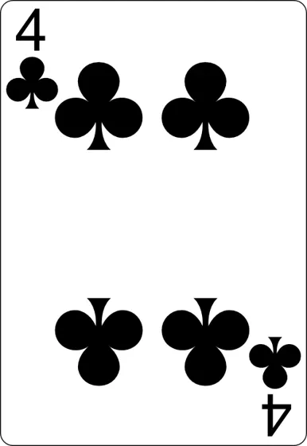

Card Grimoire
Four of Clubs
Numerology
Number: 4. Keyword: stability.
Fours are steady and reliable, sometimes to the point of stubbornness. They express their suit's elemental influence with more emphasis than Threes and in a way that is less mutable. Changing the influence of a Four can be difficult, though that same stubborn stability becomes a blessing when the card indicates something worth keeping.
Fours carry a low-key energy rather than anything fiery or erratic. Under the influence of four, the naturally chaotic suits (Spades and Clubs) are almost always negative, though not disastrously so. The situation indicated by a Four will remain the same unless the querent takes active and persistent steps to create change.
In Readings
The fires are still small and tentative with the Four of Clubs. The querent is not resisting transformation (as with the Three of this suit), but they are not fully participating in it either. This card indicates the querent is oblivious to what is going on around them, blind to the situation for some reason.
It is difficult to move forward without clear sight. This card does not suggest doing anything rash; it simply says the querent is not making smart choices. Now might be a good time to step back and reassess: what they are doing, who they can trust, and where they are investing time and energy.
The Four of Clubs is not an especially bad card, but it is not great either. There is something the querent is simply not noticing, and the situation will not change until they wake up and see it.